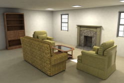

Interative Furniture Layout Using Interior Design Guidlines
Written by
Michael Halaj
Fahad Ali
Background
To set the stage, let's briefly delve into the background of the paper. Authored by experts in the fields of computer science and design, the paper addresses the challenges of furniture layout in interior design and proposes an interactive solution that leverages established design principles.
Need for Interactive Furniture Layout
Traditional methods to furniture layouts often involve trial and error, consume more time, and not to mention expensive. The paper is helping to find a more efficent and user-friendly method of solving the problem of interactive-user experience and dynamic layout system in real-time.
NO Experience Don't Worry!
The interactive tool is desinged to be intuitive, allowing users of any level of design expertise to navigate and manipulate furniture arrangements. Know sit back and let your computer do the creative thinking for you. Of course, you can help out too!
Implications for the Future
The paper's contribution extends beyond its immediate application. By combining technology and design principles, it sets a precedent for future innovations in the field of interior design. As technology continues to advance, we can anticipate further developments that enhance the creative process, making design more accessible and personalized.
Conclusion
In conclusion, the paper "Interactive Furniture Layout Using Interior Design Guidelines" represents a significant leap forward in the integration of technology and design. By empowering users to actively engage in the creative process, the interactive tool reshapes the landscape of interior design, making it more accessible, efficient, and enjoyable. As we embrace these innovations, we look forward to witnessing the continued evolution of interior design practices in the digital age.
Video
Project Paper
Link to paper: Paper is here!
Slides
Link to slides: Presentation!